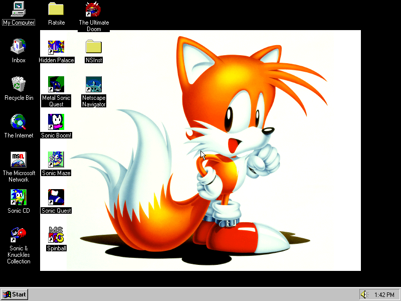
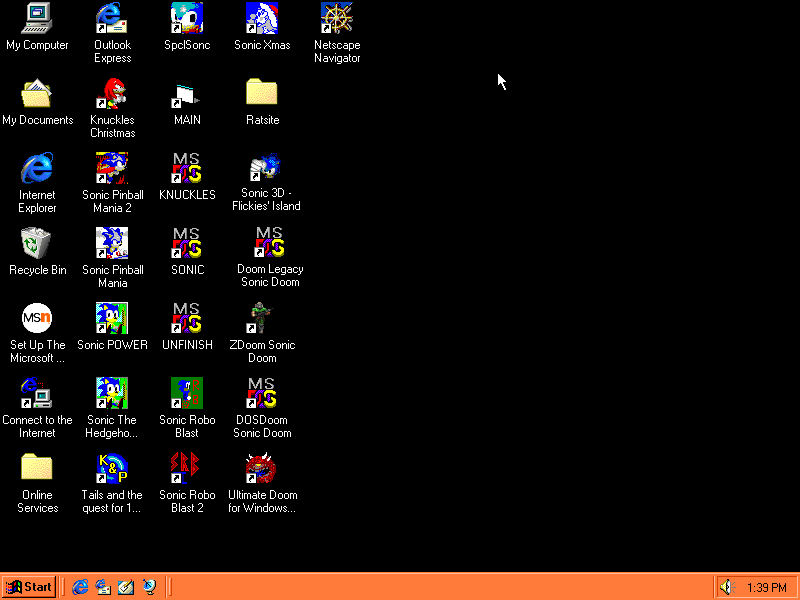
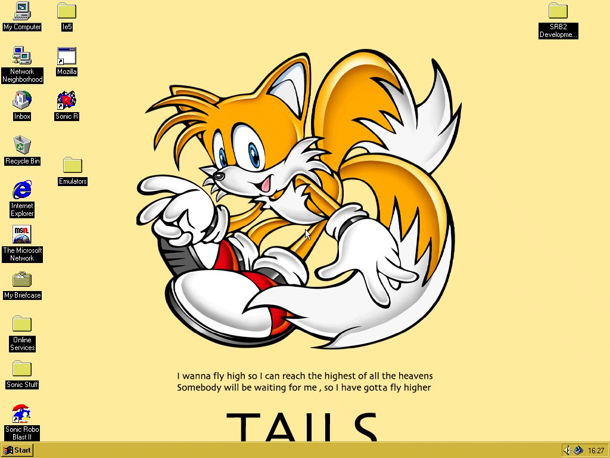
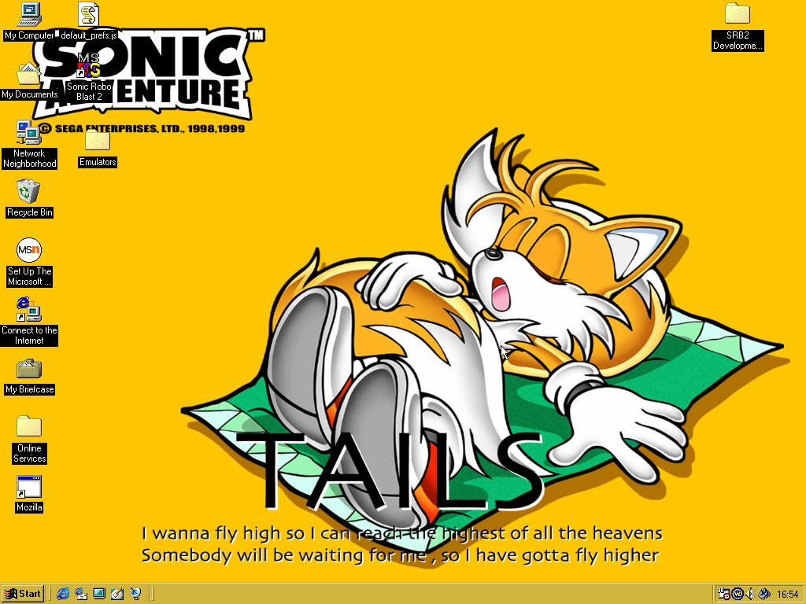
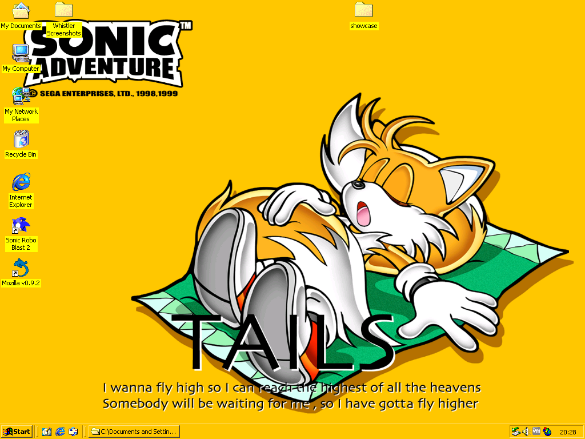
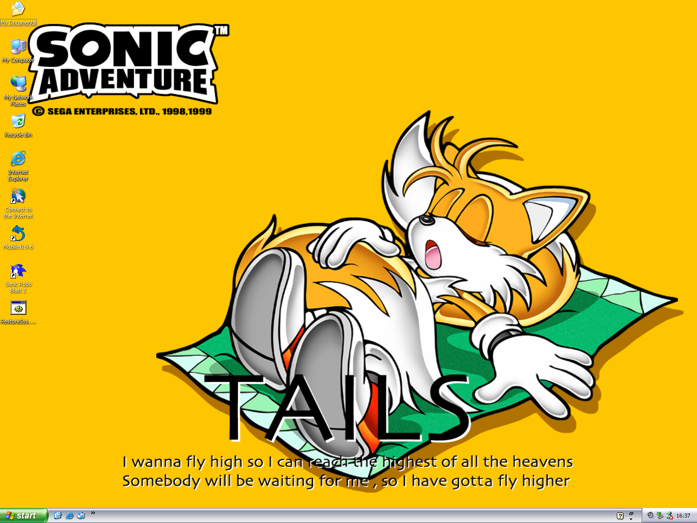

July 21st, 2016 to July 20th, 2017

- CPU: Intel Pentium @ 100/66MHz
- Hard Drive: 1.2GB
- Memory: 32MB
- External Storage: CD-ROM
- Modem: None
- Display: WD90C24a Rev. C, 1MB VRAM, 800x600
- Sound: CS4231
- Operating System: Windows 95 OSR1
July 21st, 2017 to July 20th, 2018

- CPU: Intel Pentium MMX @ 166/66MHz
- Hard Drive: 3GB (1.99GB on C, 885MB on D)
- Memory: 32MB
- External Storage: 1.44MB floppy, 8X CD-ROM
- Modem: V34 to 33K
- Display: Trident CYBER9385, 2MB VRAM, 1024x768 @ 65,536 colours
- Sound: 16-bit audio chip
- Operating System: Windows 95 OSR2, upgraded to Windows 98
July 21st, 2018 to July 20th, 2019

- CPU: Intel Pentium II @ 266/66MHz
- Hard Drive: 8.1GB
- Memory: 64MB
- External Storage: 1.44MB floppy, 16X DVD
- Modem: 56K X2
- Display: Trident CYBER9397E, 4MB VRAM, 1024x768 @ 16.7 million colours
- Sound: CS4237B
- Operating System: Windows 95 OSR2.1, upgraded to Windows 98, upgraded to Windows 98 Second Edition
July 21st, 2019 to July 20th, 2020

- CPU: Intel Mobile Pentium II @ 300MHz
- Hard Drive: 5.4GB (2GB on C FAT16, 3.4GB on D FAT32)
- Memory: 64MB
- External Storage: 1.44MB floppy, 2X DVD-ROM
- Modem: 56K V90
- Display: NeoMagic MagicMedia256AV, 2.5MB VRAM, 1024x768 @ 16.7 million colours
- Sound: NeoMagic NMA2, 16-bit SoundBlaster Pro support
- Operating System: Windows 98, upgraded to Windows 98 Second Edition
July 21st, 2020 to July 20th, 2021

- CPU: Intel Mobile Celeron @ 550MHz
- Hard Drive: 12GB
- Memory: 64MB
- External Storage: 24X CD-ROM
- Modem: 56K V90
- Display: Silicon Motion Inc. LynxEM4+ SM712, 4MB VRAM, 1024x768 @ 262,000 colours
- Sound: Intel AC97, SoundBlaster Pro support
- Operating System: Windows 2000
July 21st, 2021

- CPU: Intel Mobile Pentium III @ 1.13GHz
- Hard Drive: 48GB
- Memory: 128MB
- External Storage: 1.44MB floppy, 8X DVD-ROM
- Modem: 56K V90
- Display: S3 SuperSavage IXC16, 16MB VRAM, 1400x1050 @ 16.7 million colours
- Sound: ICH AC97, SoundBlaster compatible
- Operating System: Windows 2000